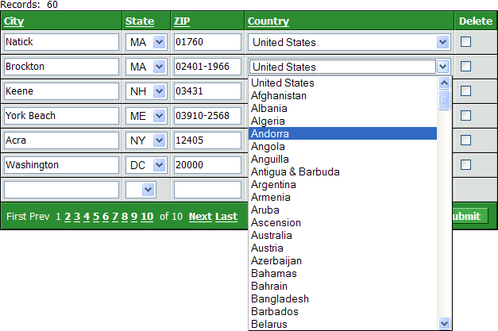

Populating a Drop Down Box with a Variable
This example shows how to populate a drop down list box with variable.
Create an editable grid with a drop down list box. In this case the grid is based on the customer table of the AlphaSports database. It contains the bill_city, bill_state_region, bill_postal_code, and bill_country fields.
Clickin the DropDownBox Properties > Choices field to display the Define Choices dialog.
Set the Define Choices > List Type to "Dynamic".
Set the Data Source > Data source type to "Variable".
Set the Data Source > Variable name to the name of the session variable that you are going to create. In the grid illustrated below, the variable was named session.countries.
Save the grid. In this case the grid was named countries.
Create an A5W page and save it. In this case the page was named countries.
Place the grid on the page and switch to the Source tab.
Modify the override settings section of the grid component to create and populate the session.countries variable. The following code example creates two session variables, which are used to populate two lists on the component:
with tmpl_Countries componentName = "Countries" session.countries = countriesofworld() session.states = cstates("a" + crlf()) end with |

See Also